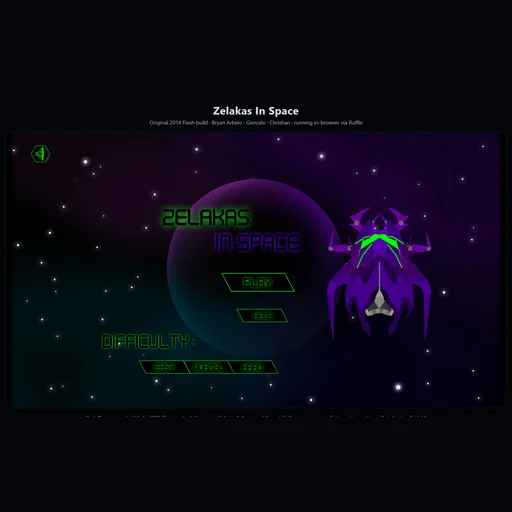

Three endings
Clear enough of the field and the run ends differently. Most players see the first ending and never learn there are two more.
No Flash Player
Flash died in 2020. Ruffle — an open-source Flash emulator compiled to WebAssembly — runs the original file safely, with no plugin to install.
Free, no account
No signup, no ads, no launcher. Open the link and you are flying.
Made in 2014
Built in ActionScript 3 by Bryan Arbelo with Gonzalo and Christian. It is preserved here exactly as it shipped, bugs and all.
A remake is coming
A native Godot 4 port lives in the studio's open workshop repo. The Flash build stays up regardless — preservation first.
Hand-drawn
Every ship, rock and drone was drawn by a person. That rule still holds across every Magestican Studios game.
What it looks like


Frequently asked
Do I need Flash Player?
No. Flash Player was end-of-lifed in 2020 and no browser will run it. This page loads the original ZelakasInSpace.swf through Ruffle, an open-source Flash emulator written in Rust and compiled to WebAssembly. It runs in the page's own sandbox; nothing installs.
Is it free?
Yes — free, no ads, no signup.
How many endings are there?
Three, decided by how much of the field you clear before the run ends.
What are the controls?
Keyboard only: arrows to fly, fire key to shoot. A 2014 desktop game gets 2014 desktop controls. If you want something that works on a phone, Farmyshoot has touch controls built in.
Will it work on my work laptop?
If the browser opens, yes. There is no installer and no admin rights involved — see games with no download for office computers.
Is my data collected?
No account, no profile, no advertising. We count anonymous, cookieless page views so we know which games people find. See the privacy policy.
One ship. A lot of asteroids. Three ways it ends.
Play Zelakas In Space now